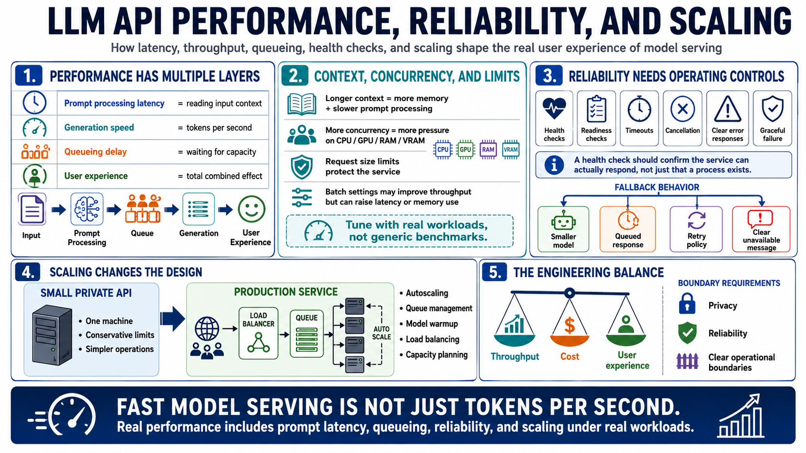

Performance, Scaling, and Reliability
Connecting to LMS... Progress: in progress

Narration
LLM API performance has several layers. Prompt processing latency is the time spent reading the input context. Generation speed is often measured in tokens per second. Queueing delay appears when more requests arrive than the service can handle immediately. User experience depends on the combination of these factors, not a single benchmark number.
Context windows affect serving performance because longer prompts consume more memory and increase prompt processing time. Concurrency increases pressure on CPU, GPU, RAM, and VRAM. Request size limits help prevent oversized prompts from overwhelming the service. Batch settings may improve throughput in some runtimes, but they can also increase latency or memory use. Performance tuning should be based on real workloads.
Reliability practices include health checks, readiness checks, graceful failure, timeouts, cancellation, clear error responses, and fallback behavior. A health check should confirm that the service is available and able to respond as expected, not merely that a process exists. Fallback behavior might include a smaller model, a queued response, a retry policy, or a clear message that the service is unavailable.
Scaling can be simple or complex. A small private API may need only one machine and conservative limits. A production service may need autoscaling, queue management, model warmup, load balancing, and capacity planning. The engineering challenge is balancing throughput, cost, and user experience while preserving privacy, reliability, and clear operational boundaries.